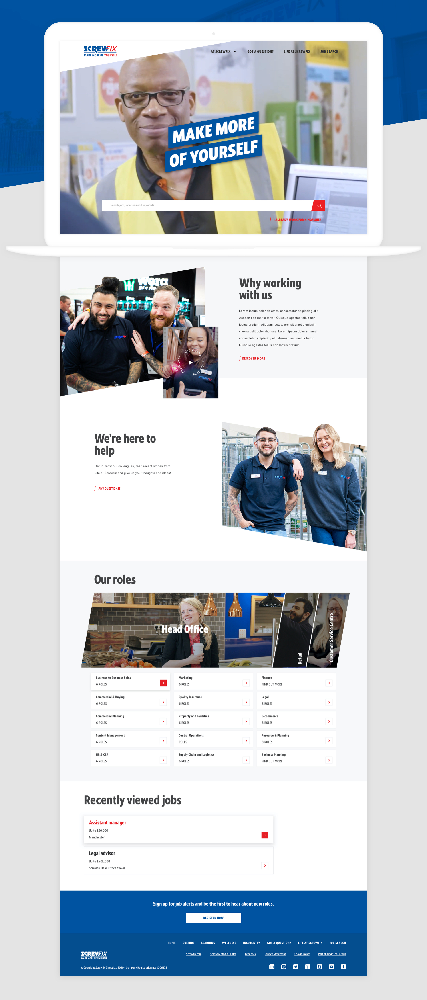
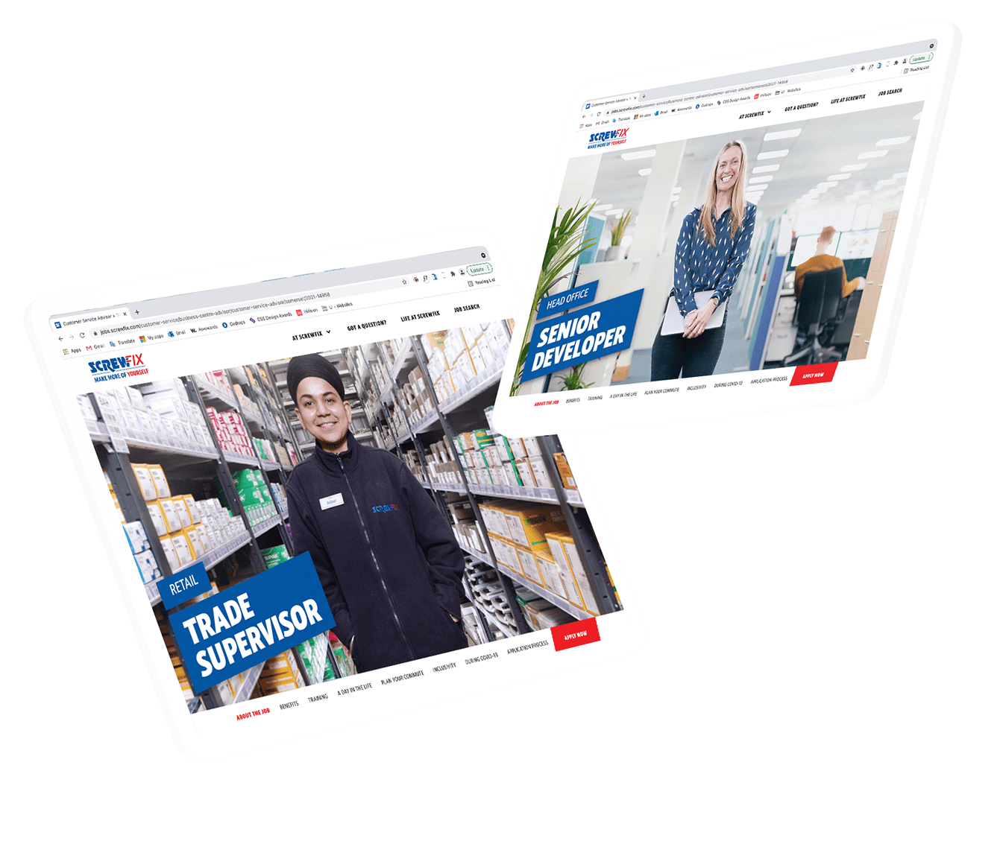

WEBSITE DESIGN – UX, UI
Screwfix, website redesign
Brief & discovery
Screwfix had grown significantly since the current site was built, and the site had become dated and no longer fit for purpose. The job market had also changed in this time. The best employers in the market were focusing heavily on simple job search, showcasing personality and culture, making it easy to find relevant content.
Screwfix had the ambition to become one of the most inclusive companies to work for. They wanted everyone to feel comfortable being themselves in the workplace, so that they could reach their full potential. They wanted their new careers website to communicate this as well as making it as easy as possible for candidates to find the right job and apply for it. After not making any updates to their website since 2016, they needed something that would:
Screwfix had the ambition to become one of the most inclusive companies to work for. They wanted everyone to feel comfortable being themselves in the workplace, so that they could reach their full potential. They wanted their new careers website to communicate this as well as making it as easy as possible for candidates to find the right job and apply for it. After not making any updates to their website since 2016, they needed something that would:
- Look less like their consumer catalogue
- Bring their work culture to life
- Position them as a leading digital business
- And elevate candidate experience to new heights


The solution
We designed a highly personalised user experience that help candidates discover what area they belong within Screwfix at the same time that introduces them to the new employer brand and guiding values: growth, learning, wellbeing and belonging.
By aggregating content dynamically, we could ensure candidates would engage with relevant brand messaging whatever their route to application. We turned irrelevant content and boring job descriptions into engaging experiences, where users can immerse themselves into Screwfix culture, learn about career development through employee testimonials that worked in the same role, and even start thinking about their new commute.
By aggregating content dynamically, we could ensure candidates would engage with relevant brand messaging whatever their route to application. We turned irrelevant content and boring job descriptions into engaging experiences, where users can immerse themselves into Screwfix culture, learn about career development through employee testimonials that worked in the same role, and even start thinking about their new commute.


The results
Since our launch in May 2021, we have:
Created content rich landing pages for EVERY SINGLE ROLE
Implemented our intelligent job search functionality to make it easy for users to find jobs on the home page
Made video profiles for each and every job description
Fed in even more engaging content to the site
Enabled candidates to access job descriptions in just 2 clicks (down from over 5).


Role Lead Digital Designer
Responsibilities end-to-end website design (discovery, IA and sitemap, wireframing, design and prototyping)
Launch date 2021
Responsibilities end-to-end website design (discovery, IA and sitemap, wireframing, design and prototyping)
Launch date 2021